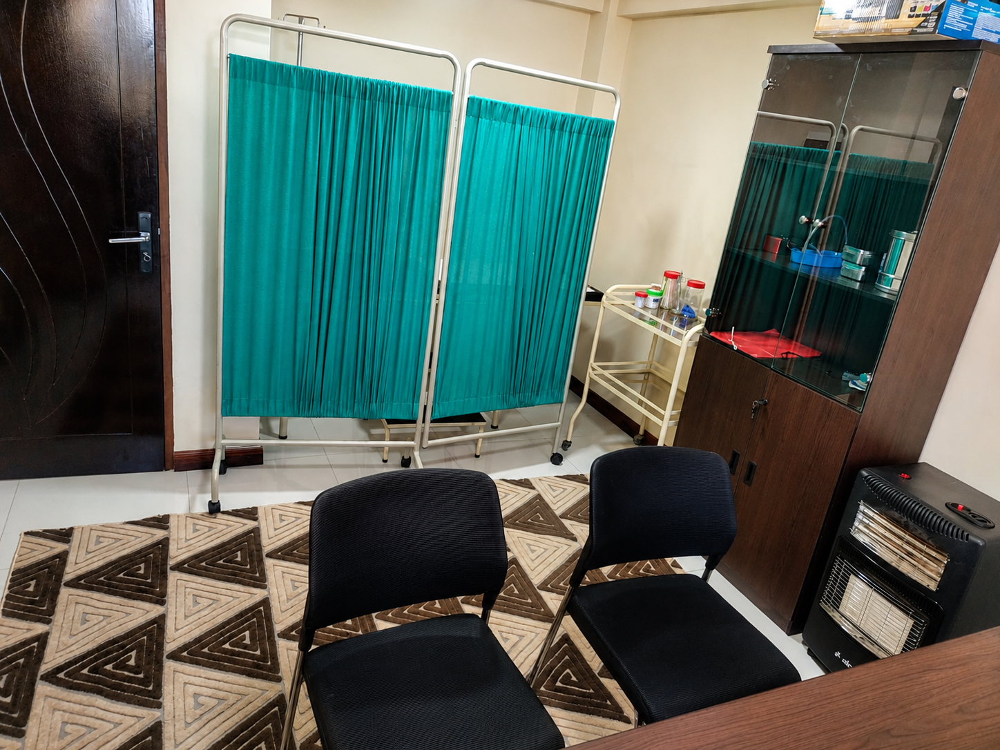

Dr. Miguel Angel Escobar

SABIMEDIC JESUS - ORURO
Fundador y profesional responsable
“Soy medico de vocación y de corazón.”
Desde niño supe que queria ayudar a las personas. Creci viendo de cerca el dolor, la preocupacion de las familias cuando un ser querido se enferma y tambien la esperanza que da una buena atencion. Esa mezcla me marco. Decidi estudiar medicina porque queria ser parte de la solucion, no solo ver el problema.
La carrera fue dura, con noches sin dormir, guardias y mucha responsabilidad. Pero cada paciente que se iba mejor de mi consulta me recordaba por que estaba ahi. Me forme con una idea clara: la medicina no es solo recetar, es escuchar, explicar y acompañar.
Con los años gane experiencia en hospitales y centros de salud. Ahi atendi de todo: niños con fiebre, adultos con presion alta y abuelitos que solo necesitaban que alguien les tuviera paciencia. Aprendi que en Oruro la gente necesita un doctor cercano, que hable claro, sin tecnicismos y que no haga sentir a nadie menos por no entender.
Pero tambien vi algo que me dolio: mucha gente posterga ir al medico por miedo, por el costo o porque las consultas son muy frias e impersonales. Y pense: “si yo puedo hacer un lugar distinto, lo voy a hacer”.
SABIMEDIC JESUS nacio en Oruro en el año 2024 del sueño de servir y del amor de una familia. Como medico vi que muchas personas necesitaban algo mas que una receta: necesitaban ser escuchadas. Por eso decidi abrir un consultorio donde la medicina sea cercana, clara y humana.
¿Por que ese nombre?
SABIMEDIC representa una medicina con sabiduria, ciencia y humanidad. SABI nace de Sabina, mi madre, quien me enseño el cuidado, la paciencia y la calidez humana.
JESUS representa a Jesus, mi padre, quien me enseño el trabajo, la honestidad y el compromiso de servir a los demas. Este consultorio es un homenaje a su ejemplo.
Nuestra mision: prevenir, explicar y acompañar, honrando el nombre que llevamos.
SABIMEDIC JESUS - Tu salud, nuestra prioridad.